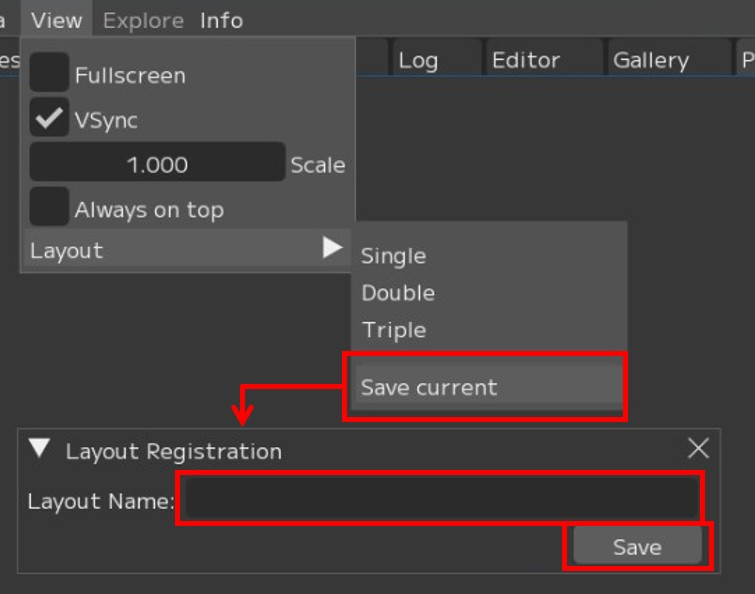

View
This section describes the menu for changing the screen layout (View) to suit your workflow.
{kind=link}
① ☑ VSync:
Vertical sync setting. * Enabled by default.
② Scale:
UI display scaling setting
③ ☑ Always on Top:
Whether to keep FCS always displayed in the foreground
④ Layout ▶:
Layout preset settings and switching

① Single: Switch to Single layout
② Double: Switch to Double layout
③ Triple: Switch to Triple layout
④ Sample_Layout ▶: Select a custom layout registered with [Save current]
[Apply]: Switch to the saved layout
[Delete]: Delete the saved layout
⑤ Save current: Save the current layout with a name
① Single Layout

② Double Layout

③ Triple Layout

How to Save a Layout
1. Press [Save current] to open the “Layout Registration” window.
Enter the layout name in Layout Name and press [Save].
{kind=link}

2. The saved layout appears in the list.
[Apply]: Switch to the saved layout
[Delete]: Delete the saved layout

3. The saved layout data is stored at the following path.
C:\Users\$USER\.fcs\Cortado\$FCS_VERSION\layouts\saved
Menu Descriptions - Table of Contents
- File: Session file management and basic operations
- Settings: File/Settings - Global environment settings and behavior options for FCS
- Window: Display and operation guide for each window
- Maya: Launching and linking with Maya
- View: Adjusting the workspace layout
- Explore: Browsing files in Windows Explorer from FCS
- Info: Version information and more